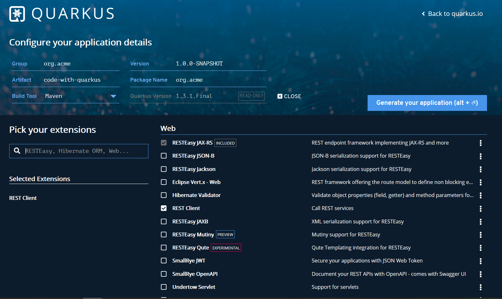

Interacting with REST APIs in Quarkus¶
In the last post, we used Spring compatible APIs to rebuild our original REST APIs in a Quarkus application. In this post, we will interact with the REST APIs in the client side.
There a few HTTP Client libraries used to communicate with REST APIs, such as Apache HTTPClient, OkHttp, etc. And Spring has specific RestTemplate, WebClient API can be used to interact with REST APIs. And Java 11 also ship a new stable HttpClient API.
Quarkus has built-in support of the latest Microprofile, which includes a Rest Client spec for this purpose, the Quarkus rest-client supports both MP RestClient and JAX-RS Client API. In this posts, we will explore MP RestClient, JAX-RS Client and Java 11 HttpClient one by one.
MicroProfile Rest Client¶
First of all, let's have a look at how to use MP RestClient to consume REST APIs.
Generate a simple Quarkus application using Quarkus Coding, remember adding Rest Client into dependencies.

Create a simple interface PostResourceClient.
@Path("/posts")
@RegisterRestClient
public interface PostResourceClient {
@Path("count")
@GET
@Produces(MediaType.APPLICATION_JSON)
CompletionStage<Long> countAllPosts(@QueryParam("q") String q);
@GET
@Produces(MediaType.APPLICATION_JSON)
CompletionStage<List<Post>> getAllPosts(
@QueryParam("q") String q,
@QueryParam("offset") @DefaultValue("0") int offset,
@QueryParam("limit") @DefaultValue("10") int limit
);
}
The class and method signature is similar with PostResource we have created in the former posts.
- We declare an interface instead of a class.
- The interface is annotated with the
@RegisterRestClientannotation. - The method can return entity type directly or a Jaxrs's
Responseor Java 8'sCompletionStagewrapper.
You can configure the baseUri in the application.properties, or set baseUri attribute the @RegisterRestClient annotation.
Here is an example of the configuration in the application.properties.
com.example.PostResourceClient/mp-rest/url=http://localhost:8080
com.example.PostResourceClient/mp-rest/scope=javax.inject.Singleton
By default it uses the full qualified name of the Rest Client class as prefix of the config key. To change this, just set configKey attribute in the @RegisterRestClient annotation.
To use the PostResourceClient in your CDI bean, just inject it by @Inject with a CDI qualifier @RestClient.
@Path("/api")
@RequestScoped
public class PostController {
@Inject
@RestClient
PostResourceClient client;
@GET
@Produces(MediaType.APPLICATION_JSON)
public CompletionStage<PostPage> getAllPosts(
@QueryParam("q") String q,
@QueryParam("offset") @DefaultValue("0") int offset,
@QueryParam("limit") @DefaultValue("10") int limit
) {
return this.client.getAllPosts(q, offset, limit)
.thenCombine(
this.client.countAllPosts(q),
(data, count) -> PostPage.of(data, count)
);
}
}
The above getAllPosts method is trying to combine the data and count into a new PostPage instance.
To test if the client is working as expected. Firstly you should start the server side application to serve the REST APIs. Run it by mvn quarkus:dev command.
Then run the client application we are building by mvn quarkus:dev again.
$ curl http://localhost:8081/api/
{"content":[{"content":"My second post of Quarkus","createdAt":"2020-04-02T17:02:06.453988","id":"768a980f-b617-40c1-ba07-60759045d6b7","title":"Hello Again, Quarkus"},{"content":"My first post of Quarkus","createdAt":"2020-04-02T17:02:06.452993","id":"675bf657-fce4-4724-96c3-a2e2bf38ad58","title":"Hello Quarkus"}],"count":2}
In our PostResource , to access a none existing post resource, it will return a 404 HTTP status. Add the following method signature in the PostResouceClient.
public interface PostResourceClient {
...
@GET
@Path("{id}")
@Produces(MediaType.APPLICATION_JSON)
CompletionStage<Post> getPostById(@PathParam("id") String id);
}
And create a new method in the PostController to invoke the above APIs.
public class PostController {
...
@GET
@Path("{id}")
@Produces(MediaType.APPLICATION_JSON)
public CompletionStage<Post> getPost(@PathParam("id") String id ){
return this.client.getPostById(id);
}
}
When accessing a none existing post in the client application, it also return a 404 HTTP status.
If you do not want MP Rest Client to convert it automatically, you can use ResponseExceptionMapper to convert the failure status into a custom exception, and that leave room for you to handle it as you expected.
public class PostResponseExceptionMapper implements ResponseExceptionMapper<RuntimeException> {
@Override
public RuntimeException toThrowable(Response response) {
if(response.getStatus()==404) {
return new PostNotFoundException("post not found, original cause:" + response.readEntity(String.class));
}
return null;
}
}
And register it on the PostResourceClient class with a @RegisterProvider annotation.
@RegisterProvider(PostResponseExceptionMapper.class)
public interface PostResourceClient {}
Now, trying to accessing a none existing post resource, it will throw an PostNotFoundException in the background.
As an example, you can handle this exception with a custom ExceptionMapper in our client application. Check the PostNotFoundExceptionMapper yourself.
JAX-RS Client API¶
Besides the declarative means provided in MP Rest Client, JAX-RS 2.0 provides a Client API to shake hands with the REST APIs in a programmatic way.
Let's have a look at the JAX-RS version of PostResourceClient.
@ApplicationScoped
public class PostResourceClient {
private ExecutorService executorService = Executors.newCachedThreadPool();
private Client client;
private String baseUrl ;//= "http://localhost:8080";
@Inject
public PostResourceClient(PostServiceProperties properties) {
baseUrl = properties.getBaseUrl();
client = ClientBuilder.newBuilder()
.executorService(executorService)
.build();
}
CompletionStage<Long> countAllPosts(String q) {
return client.target(baseUrl + "/posts/count")
.queryParam("q", q)
.request()
.rx()
.get(Long.class);
}
CompletionStage<List<Post>> getAllPosts(
String q,
int offset,
int limit
) {
return client.target(baseUrl + "/posts")
.queryParam("q", q)
.queryParam("offset", offset)
.queryParam("limit", limit)
.request()
.rx()
.get(new GenericType<List<Post>>() {});
}
}
It uses the JAX-RS's ClientBuilder to build a Client firstly, then use it to call REST APIs.
The PostServiceProperties is a MP config class to read external configuration from the application.properties file.
@ConfigProperties(prefix = "post-service")
public class PostServiceProperties {
private String baseUrl;
public String getBaseUrl() {
return baseUrl;
}
public void setBaseUrl(String baseUrl) {
this.baseUrl = baseUrl;
}
}
And the content of the application.properties file.
post-service.base-url=http://localhost:8080
But if you are using the JAX-RS client API, you should handle exceptions manually. For example, calling the REST API like this in the PostResourceClient.
Post getPostById(String id) {
try (Response getPostByIdResponse = client.target(baseUrl + "/posts/" + id)
.request().get()) {
if (getPostByIdResponse.getStatus() == 404) {
throw new PostNotFoundException(id);
}
return getPostByIdResponse.readEntity(Post.class);
}
}
Next, let's look at the HttpClient in Java 11.
Java 11 HttpClient¶
If you are using Java 11, it is luckily to use the brand new HttpClient API which is stabilized to public since Java 11.
The following is a new version using Java 11 HttpClient.
@ApplicationScoped
public class PostResourceClient {
private final ExecutorService executorService = Executors.newFixedThreadPool(5);
private final HttpClient httpClient = HttpClient.newBuilder()
.executor(executorService)
.version(HttpClient.Version.HTTP_2)
.build();
public PostResourceClient() {
}
CompletionStage<Long> countAllPosts(String q) {
return this.httpClient
.sendAsync(
HttpRequest.newBuilder()
.GET()
.uri(URI.create("http://localhost:8080/posts/count?q=" + q))
.header("Accept", "application/json")
.build()
,
HttpResponse.BodyHandlers.ofString()
)
.thenApply(HttpResponse::body)
.thenApply(Long::parseLong)
.toCompletableFuture();
}
CompletionStage<List<Post>> getAllPosts(
String q,
int offset,
int limit
) {
return this.httpClient
.sendAsync(
HttpRequest.newBuilder()
.GET()
.uri(URI.create("http://localhost:8080/posts?q=" + q + "&offset=" + offset + "&limit=" + limit))
.header("Accept", "application/json")
.build()
,
HttpResponse.BodyHandlers.ofString()
)
.thenApply(HttpResponse::body)
.thenApply(stringHttpResponse -> JsonbBuilder.newBuilder().build().fromJson(stringHttpResponse, new TypeLiteral<List<Post>>() {}.getType()))
.thenApply(data ->(List<Post>)data)
.toCompletableFuture();
}
}
In the getAllPosts method , it uses JSON-B to convert the raw HTTP messages from String to a List<Post>.
Get the source codes from my Github.